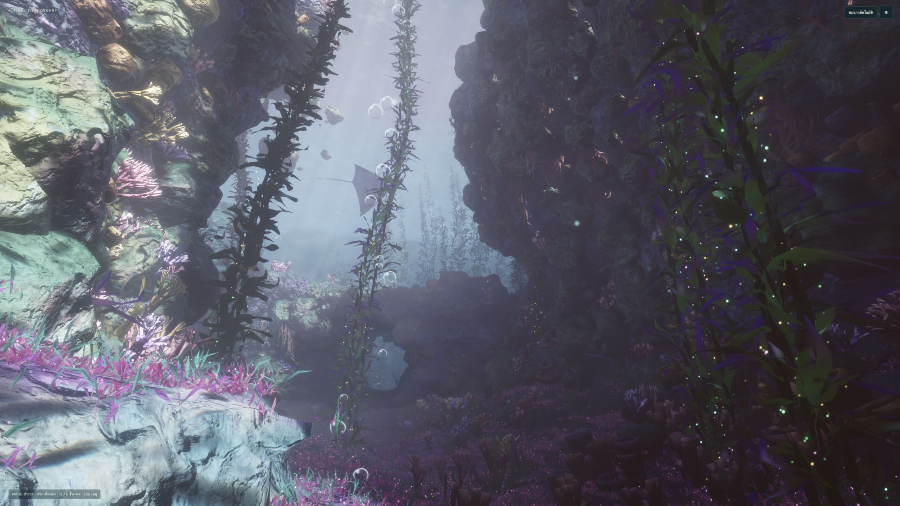

STUDY 01Tidal Sanctuary
From a sunlit cove to swaying kelp, a forgotten wreck, and a luminous underwater grotto. One continuous world, made entirely from code.
Requires a browser with WebGPU · keyboard and mouse recommended
121.1 KB HTMLNo external runtime assets